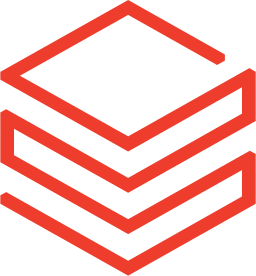
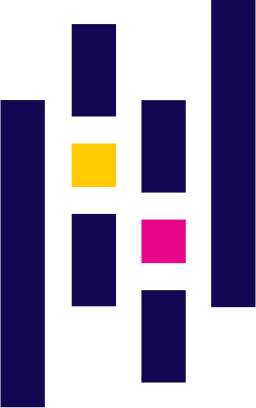
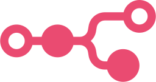
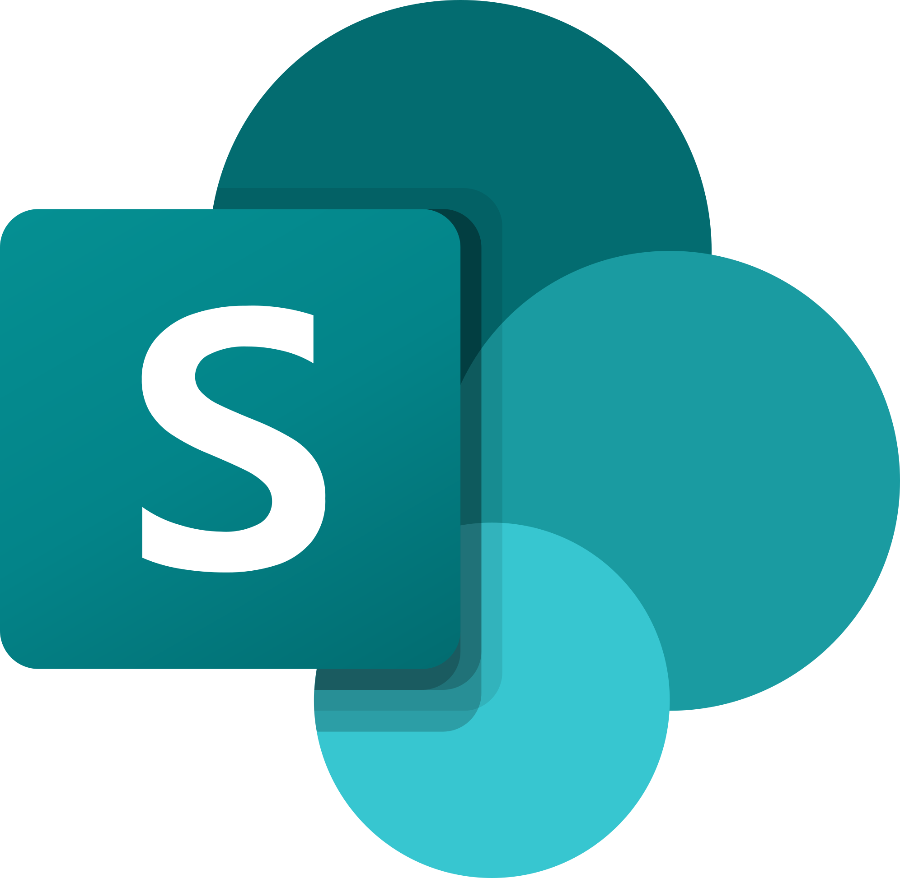
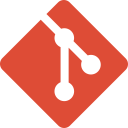

Transformando metas em resultados
Bem-vindo(a) ao meu portfólio. Aqui você verá como conecto planejamento, gestão e dados para alinhar áreas, acompanhar metas e apoiar boas decisões.
Experiência profissional
Minha trajetória em resumo. Clique em um trabalho para ver o que fiz, os destaques e as tecnologias.
-
Desde abril de 2026Emprego atual
Clariens Educação
Analista de Planejamento Acadêmico SrCuido dos custos docentes e do planejamento acadêmico e criei a Arin e o SPA, ferramentas da Clariens Educação.
- Arin, agente de IA em uso
- SPA, sistema do planejamento
-
Maio de 2025 a abril de 2026
dtech Treinamentos
Analista EducacionalMinistrei treinamentos, reformulei ementas e acompanhei as turmas em tempo real.
- Ementas de Excel e Power BI
- Turmas em tempo real
-
Novembro de 2023 a abril de 2025
Grupo GPS
Analista de Planejamento e QualidadeOrganizei o planejamento, os indicadores e a medição do contrato de facilities da Acelen na Refinaria de Mataripe.
- NPS de 7 para 10
- Operação de até 90 pessoas
-
Junho a outubro de 2023
DTech Educacional
Estagiário de TICriei o site da empresa e dei aulas de Arduino e informática para o Fundamental II.
- Site em WordPress no ar
- Aulas de Arduino
Projetos
Conheça meus principais trabalhos por área de atuação.
Ferramentas e habilidades
O que uso no dia a dia para organizar dados, planejar e acompanhar resultados.
 Power BI
Power BI- Power Query
- DAX
- Looker Studio
 Excel
Excel- VBA
- SQL

Databricks- Data Lake
 Python
Python
 Pandas
Pandas Power Apps
Power Apps Power Automate
Power Automate
n8n
SharePoint Lists MS Project
MS Project
Git- Azure DevOps
- Claude Code
- Codex
- Indicadores
- Modelagem de dados
- Estatística
- Análise preditiva
- Planejamento e controle
- Análise de custos
- Budget
- Gestão de contratos
- Gestão de riscos
- Padronização de processos
- Melhoria contínua
- Automação de processos
- Pipelines de dados
- Agentes de IA